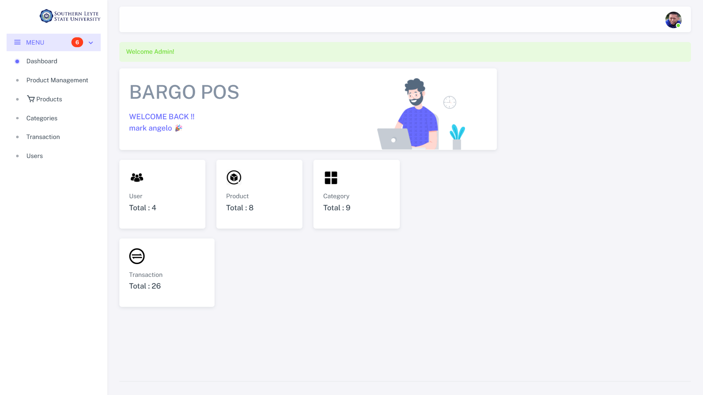
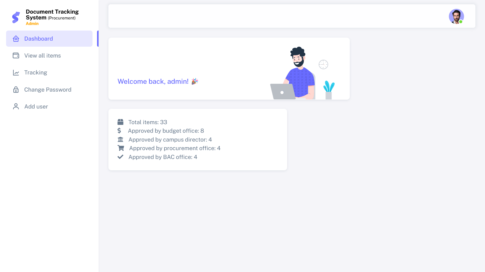
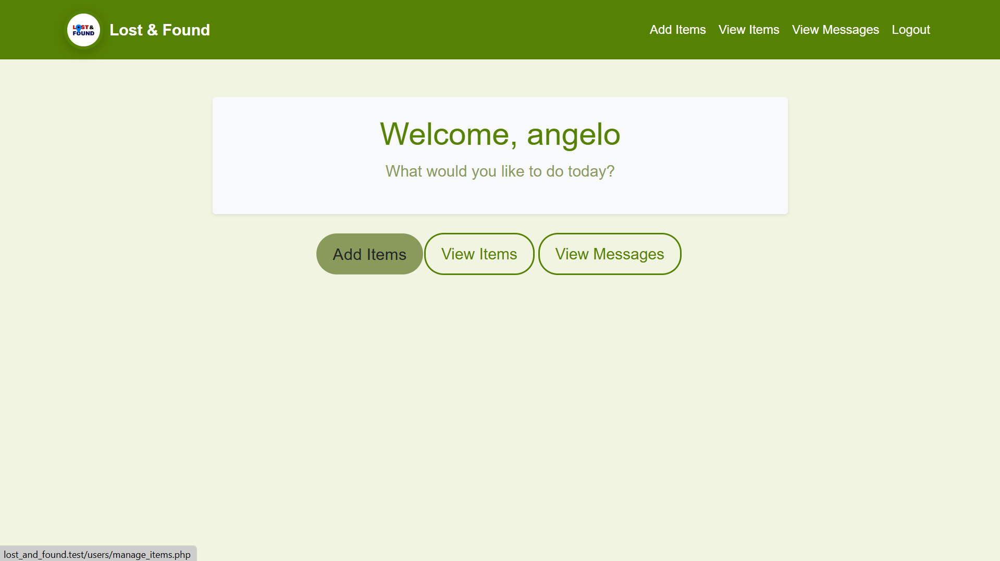

About Me
Hello! My name is Mark Angelo Lasala, and I am a college student passionate about technology and innovation. Currently pursuing a degree in INFORMATION TECHNOLOGY MAJOR IN PROGRAMMING, I am eager to explore opportunities that allow me to grow and make a meaningful impact in my field. I am developing skills in software development, database management, and creating user-friendly web applications. I enjoy taking on new challenges to expand my knowledge and improve my expertise. Whether it's building dynamic websites, solving coding problems, or learning new programming languages, I approach everything I do with enthusiasm and determination. In my free time, you can find me playing mobile games. I believe in lifelong learning, collaboration, and the power of technology to transform lives. I aim to apply these values in my studies and future career. I look forward to connecting with like-minded individuals and contributing to projects that inspire innovation and growth.
Personal Details
- Name: Mark Angelo Lasala
- Location: Nahulid, Libagon Southern Leyte
- Email: Markpetpet0827@gmail.com
- Phone: 09532214110
Skills
Education
Bachelor of Science Information Technology Major in PROGRAMMING
SLSU Bontoc (Southern Leyte State University - Bontoc Campus)
Works
Bargo POS
A Bargo POS is a point-of-sale system designed to streamline sales, inventory, and customer management for businesses, offering features like real-time reporting, user-friendly interfaces, and support for various payment methods.
GitHub Link(Document Tracking System)Procurement
The Document Tracking System for Procurement is a digital tool used to monitor, manage, and track procurement-related documents, ensuring transparency, accountability, and efficient workflow throughout the procurement process.
Lost and Found
The Lost and Found system is a platform used to record, track, and manage lost or recovered items, helping individuals report missing belongings and facilitating their return through organized documentation and retrieval processes.